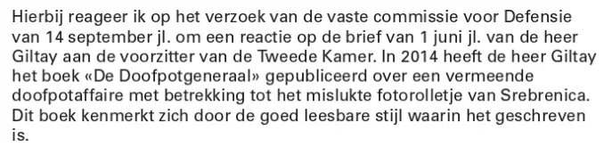
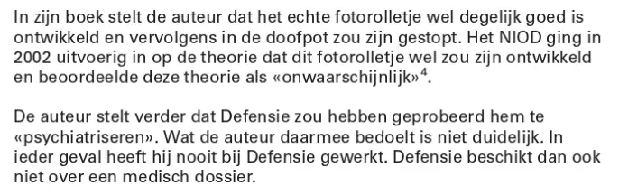

Exhibit · Letter
Letter to Parliament from Minister of Defence Dijkhoff to Speaker Arib, 13 October 2017
The Voices section quotes three things from this letter: its verdict on the style of the book, its criticism of the film-roll theory and its criticism of the word ‘psychiatrisation’. They are set out below in the order of the letter.
On the style of the book
“In 2014 Mr Giltay published the book ‘De Doofpotgeneraal’ about an alleged cover-up affair concerning the failed film roll of Srebrenica. This book is characterised by the highly readable style in which it is written.” Page 3, the end of the first paragraph of the Minister’s letter. The line breaks have been closed up here. The letter writes the book title as ‘De Doofpotgeneraal’, with a capital on both words, whereas the book itself is styled De doofpotgeneraal. Translated from the Dutch; the original wording is below. De doofpotgeneraal is the book’s original Dutch title; the English edition is The Cover-up General.
“In 2014 heeft de heer Giltay het boek «De Doofpotgeneraal» gepubliceerd over een vermeende doofpotaffaire met betrekking tot het mislukte fotorolletje van Srebrenica. Dit boek kenmerkt zich door de goed leesbare stijl waarin het geschreven is.” Original wording

On the film roll and ‘psychiatrisation’
“In his book the author claims that the real film roll was in fact developed properly and was then covered up. In 2002 the NIOD examined at length the theory that this film roll had been developed after all, and judged that theory ‘improbable’. The author further claims that the Ministry of Defence tried to ‘psychiatrise’ him. What the author means by that is unclear. In any event he has never worked for the Ministry of Defence. Nor, therefore, does the Ministry hold a medical file on him.” Page 3, the fourth and fifth paragraphs of the Minister’s letter. The line breaks have been closed up here. The footnote reference that follows «onwaarschijnlijk» in the letter, note 4, pointing to pages 3027–3028 of the NIOD report, is left out here. Translated from the Dutch; the original wording is below.
“In zijn boek stelt de auteur dat het echte fotorolletje wel degelijk goed is ontwikkeld en vervolgens in de doofpot zou zijn gestopt. Het NIOD ging in 2002 uitvoerig in op de theorie dat dit fotorolletje wel zou zijn ontwikkeld en beoordeelde deze theorie als «onwaarschijnlijk». De auteur stelt verder dat Defensie zou hebben geprobeerd hem te «psychiatriseren». Wat de auteur daarmee bedoelt is niet duidelijk. In ieder geval heeft hij nooit bij Defensie gewerkt. Defensie beschikt dan ook niet over een medisch dossier.” Original wording

Why this document matters
In his letter of 1 June 2017, page 1 of this PDF, Giltay pointed out to Parliament that the Court of Appeal of The Hague had ruled that the book’s meticulousness was not in question. On 14 September 2017 the Standing Committee on Defence asked the Minister of Defence for a response. In his reply he praised the book’s readable style and then addressed its claims.
He stated that the images had been unintentionally erased while the film was being developed at a Defence photo laboratory and reported that the NIOD had judged the theory of a developed film roll ‘improbable’. He did not say a word about the examination by Agfa experts in Munich, who according to Trouw concluded in 2006 that the film had been destroyed so thoroughly that only deliberate action could explain it. He further wrote that what the author means by ‘psychiatrisation’ is unclear, and that Giltay has never worked for the Ministry of Defence, so that the department holds no medical file on him. The essay states that the letter sidestepped the military intelligence affair entirely; no intelligence service is named anywhere in the letter.
Provenance
- Document
- Letter from the government to Parliament (page 3 of this PDF)
- From
- The Minister of Defence, K.H.D.M. Dijkhoff
- To
- The Speaker of the House of Representatives of the States General, Khadija Arib
- Date
- 13 October 2017
- Reference
- 2017D29046
- Subject
- Response to the letter of 1 June 2017 from Mr Giltay to the Speaker of the House of Representatives
- References
- The request of the Standing Committee on Defence of 14 September 2017; the NIOD report Srebrenica, een ‘veilig’ gebied, 10 April 2002, pp. 3009–3028 and 3027–3028; the report of the Parliamentary Committee of Inquiry on Srebrenica, Missie zonder vrede, Parliamentary Paper 28 506, nos. 2 and 3, pp. 272–281, 273 and 458–459
- Language
- Dutch
- Published in
- Non-dossier document (niet-dossierstuk) 2017D29046 of the House of Representatives, official publication, zoek.
officielebekendmakingen. nl/ nds-tk-2017D29046.pdf - Pages
- 3 in this PDF, of which this is the third. Page 1 is Giltay’s letter of 1 June 2017, addressed to Drs Mark Rutte at the House of Representatives, subject ‘Srebrenica-doofpotaffaire’. Page 2 is the reply of the Standing Committee on Defence of 18 September 2017, ref. 2017Z09359/2017D25719, announcing that the committee had decided to ask the Minister of Defence for a response
- See also
- Trouw, on the technical examination of the film roll, 29 June 2006Court of Appeal of The Hague, judgment of 12 April 2016 (ECLI:NL:GHDHA:2016:870)Standing Committee on Defence to Giltay, 18 September 2017
Cited in:
- the essay ‘The Ban Fell, the Book Stood’ in the chapters (7) ‘Never a Substantive Answer’ and (11) ‘End the Silence for Srebrenica’
- the Voices section
- the author biography.
Document: https://
Last modified 13 September 2026, accessed 3 October 2026.

This page is an exhibit to the book The Cover-up General by Edwin Giltay and its accompanying website.